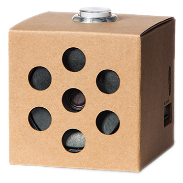

Voice Kit overview¶

The AIY Voice Kit is a do-it-yourself intelligent speaker built with a Raspberry Pi and the Voice Bonnet (or Voice HAT if using the V1 Voice Kit).
After you assemble the kit and run the included demos, you can extend the kit with your own software and hardware.
Also see the Voice Kit assembly guide.
API modules¶
To interact with the Google Assistant, convert speech to text,
and perform other actions with the Voice Kit, the
system image includes the aiy Python library with the following modules
designed for the Voice Kit:
aiy.assistant: A collection of modules that simplify interaction with the Google Assistant API.aiy.cloudspeech: APIs to simplify interaction with the Google Cloud Speech-to-Text service.aiy.vision.annotator: An annotation library that draws overlays on the Raspberry Pi’s camera preview.aiy.voice.audio: APIs to record and play audio files.aiy.voice.tts: An API that performs text-to-speech.aiy.board: APIs to use the button that’s attached to the Vision Bonnet’s button connector.aiy.leds: APIs to control certain LEDs, such as the LEDs in the button and the privacy LED.aiy.pins: GPIO pin definitions for use with gpiozero APIs.
V2 Bonnet hardware¶
The V2 Voice Kit includes the following Voice Bonnet hardware.
- Audio Codec: ALC5645 [I2C address: 0x1A]
- MCU: ATSAMD09D14 [I2C address: 0x52]
- LED Driver: KTD2027B [I2C address: 0x31]
- Crypto (optional): ATECC608A [I2C address: 0x62]
- Microphone: SPH1642HT5H-1 x 2
Drivers¶
- MCU driver:
modinfo aiy-io-i2c - MCU PWM driver:
modinfo pwm-aiy-io - MCU GPIO driver:
modinfo gpio-aiy-io - MCU ADC driver:
modinfo aiy-adc - LED driver:
modinfo leds-ktd202x - Software PWM driver for buzzer:
modinfo pwm-soft - Sound drivers:
modinfo rl6231 rt5645 snd_aiy_voicebonnet
Pinout (40-pin header)¶
3.3V --> 1 2 <-- 5V
3 4 <-- 5V
5 6 <-- GND
7 8
GND --> 9 10
11 12 <-- I2S_BCLK
13 14 <-- GND
15 16 <-- BUTTON_GPIO (GPIO_23)
3.3V --> 17 18
19 20 <-- GND
21 22 <-- LED_GPIO (GPIO_25)
23 24
GND --> 25 26
ID_SDA --> 27 28 <-- ID_SCL
29 30 <-- GND
31 32
33 34 <-- GND
I2S_LRCLK --> 35 36 <-- AMP_ENABLE
37 38 <-- I2S_DIN
GND --> 39 40 <-- I2S_DOUT
Also see the Voice Bonnet on pinout.xyz.
V1 HAT hardware¶
The V1 Voice Kit includes the following Voice HAT hardware.
- Audio Amplifier: MAX98357A
- Microphone: ICS-43432 x 2
Drivers¶
Manual overlay load:
sudo dtoverlay googlevoicehat-soundcard
Load overlay on each boot:
echo "dtoverlay=googlevoicehat-soundcard" | sudo tee -a /boot/config.txt
Pinout (40-pin header)¶
3.3V --> 1 2 <-- 5V
I2C_SDA --> 3 4 <-- 5V
I2C_SCL --> 5 6 <-- GND
7 8
GND --> 9 10
11 12 <-- I2S_BCLK
13 14 <-- GND
15 16 <-- BUTTON_GPIO (GPIO_23)
3.3V --> 17 18
19 20 <-- GND
21 22
23 24
GND --> 25 26
ID_SDA --> 27 28 <-- ID_SCL
29 30 <-- GND
31 32
33 34 <-- GND
I2S_LRCLK --> 35 36
37 38 <-- I2S_DIN
GND --> 39 40 <-- I2S_DOUT
Also see the Voice HAT on pinout.xyz.
Troubleshooting¶
See the Voice Kit help.